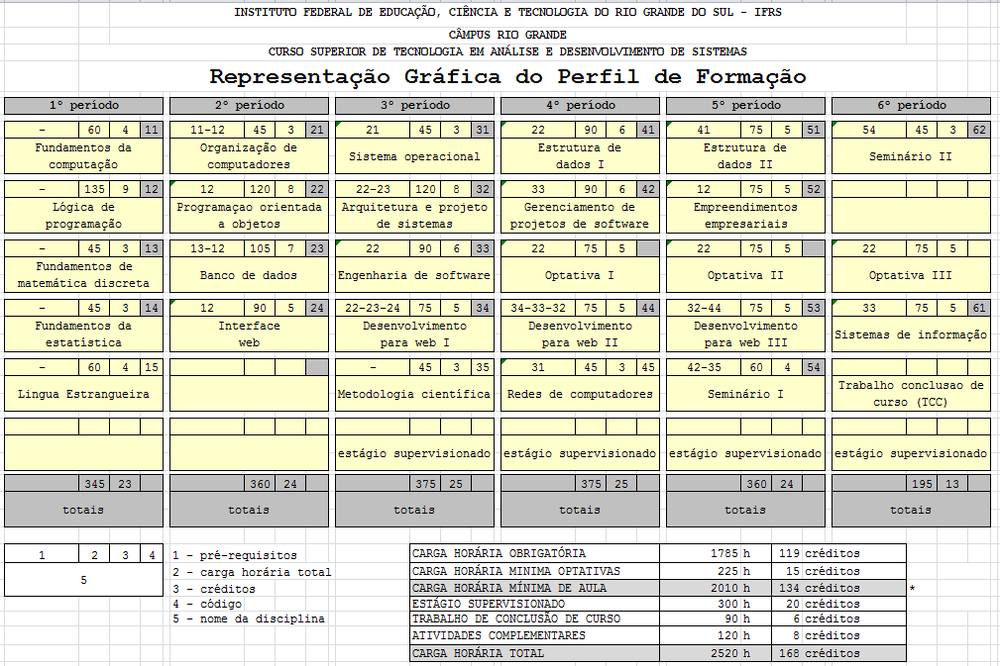

TADS
O curso Superior de Tecnologia em Análise e Desenvolvimento de Sistemas foi criado pela Universidade Federal do Rio Grande, sendo oferecido e mantido pelo CTI desde 2008. Pretende promover a educação profissional e tecnológica gratuita e de excelência, na área de análise e desenvolvimento de sistemas, através da articulação entre ensino, pesquisa e extensão, para formação humanista, crítica e competente de cidadãos, capazes de impulsionar o desenvolvimento sustentável da região e país. O curso é presencial, executado no turno da noite nas dependências do IFRS-Câmpus Rio Grande, em sala de aulas e em laboratórios de informática.
